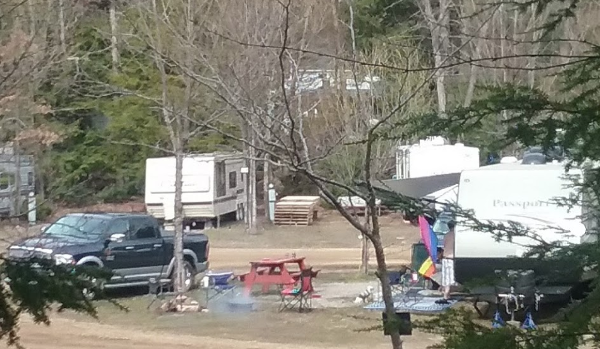
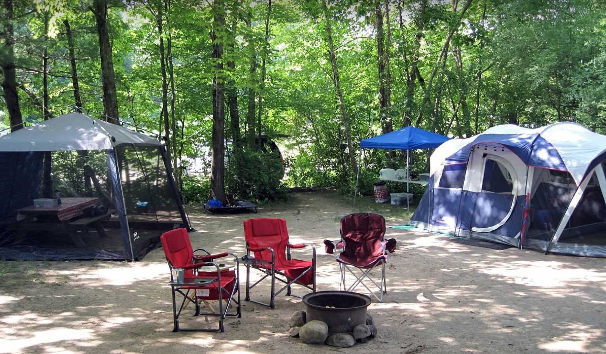
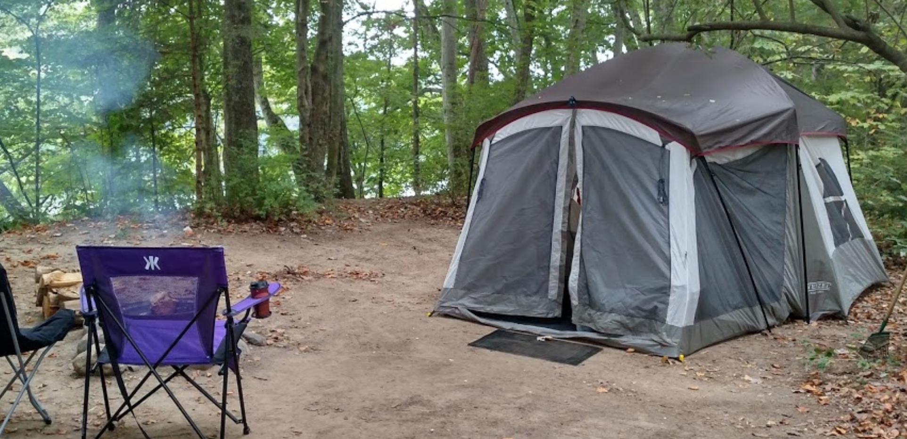
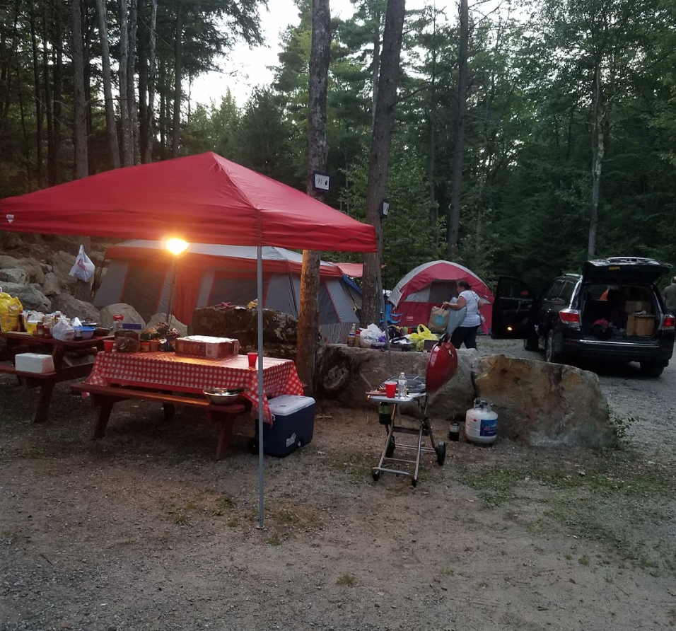
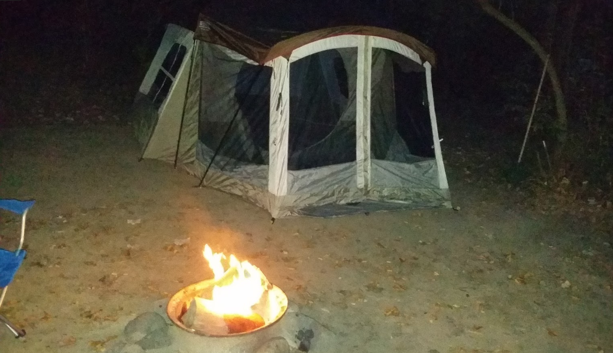

The DWGNRA offers endless opportunities for outdoor recreation for the whole family. Within a few minutes drive of the campground, there are numerous waterfall attractions, historical sites and quality hiking trails. Some of the most scenic stretches of the Appalachian Trail (AT) are only a few miles away in New Jersey. Canoeing and Kayaking on the Delaware River are popular and enjoyable activities. Dingmans Campground operates a convenient Canoe and Kayak livery service, offering river trips through the Spring, Summer and Fall. Our river trips are open to the public as well as our campers, with free parking provided. Several river trips are offered daily. BOOK NOW
    